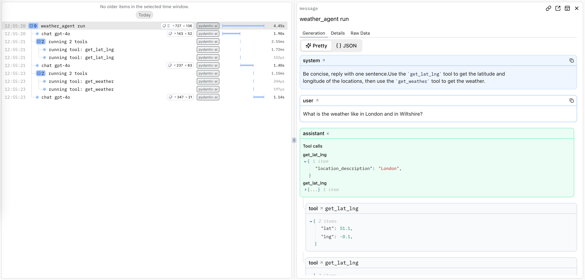
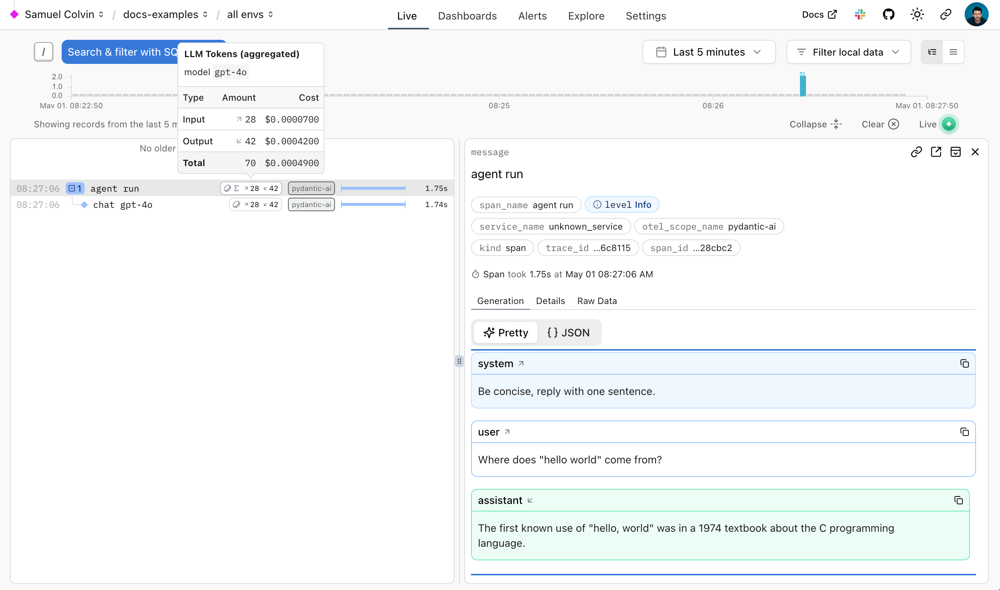
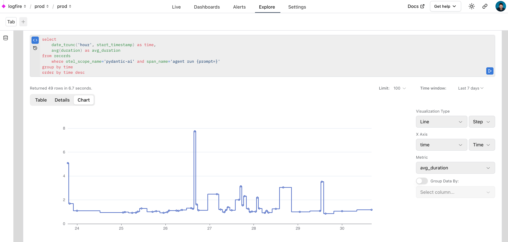
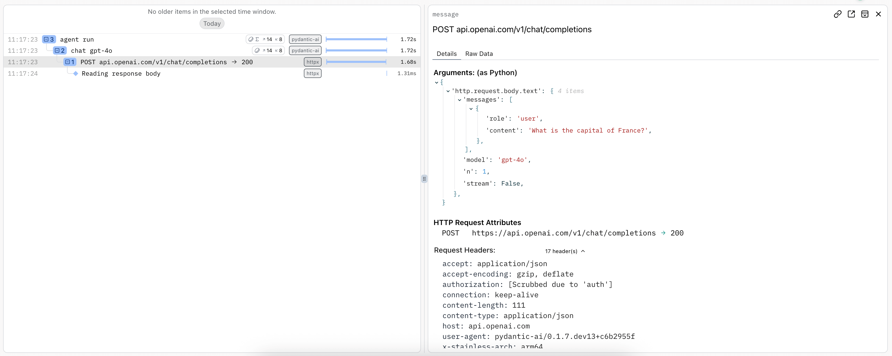
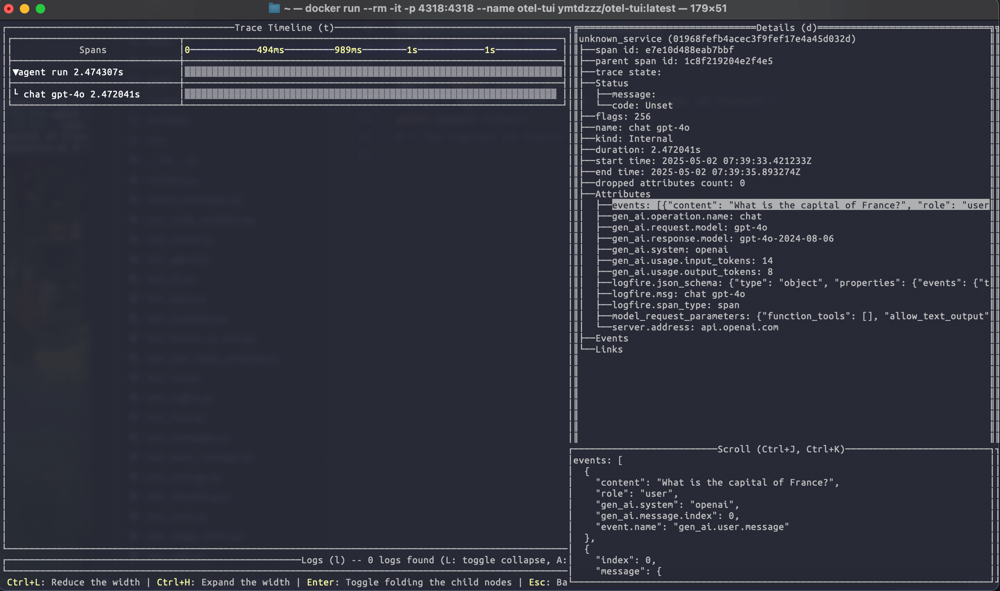
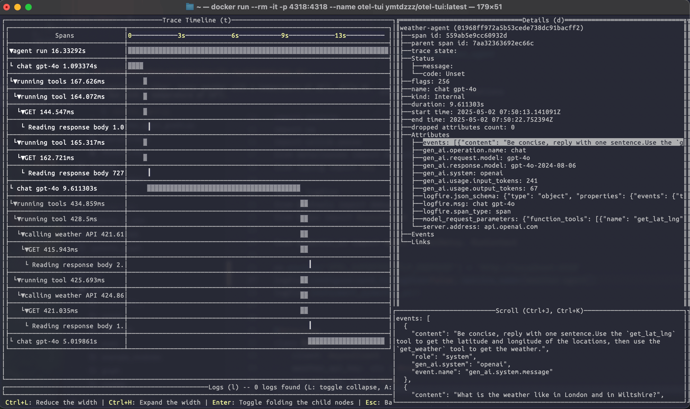

🌐 সহজ বাংলায় ব্যাখ্যাসহ সংস্করণ
এটি শুধু অনুবাদ নয়: প্রতিটি পেজে সহজ ভাষায় ব্যাখ্যা, বাস্তব জীবনের উদাহরণ, কোডের লাইন-ধরে-ধরে ব্যাখ্যা, সাধারণ ভুল আর শেষে সারসংক্ষেপ যোগ করা হয়েছে। 🤝
কোড, প্যারামিটারের নাম আর কমান্ড ইংরেজিতেই রাখা হয়েছে, কারণ এগুলো ঠিক এভাবেই লিখতে হয়। অচেনা শব্দের মানে জানতে মেনুর "শিখুন" অংশে "সহজ শব্দকোষ" পেজটি দেখুন।
এটি মানুষের নির্দেশনায় AI দিয়ে তৈরি, তাই কোথাও ভুল থাকতে পারে। সন্দেহ হলে মূল ইংরেজি সংস্করণ মিলিয়ে নিন। 🤖
Pydantic Logfire দিয়ে ডিবাগিং আর মনিটরিং¶
এই পেজে যা শিখবেন
- Observability (trace, span) কেন LLM অ্যাপের জন্য বিশেষ জরুরি।
- Logfire সেটআপ:
logfire auth,logfire projects new, তারপর দুই লাইন কোড। - কাঁচা HTTP রিকোয়েস্ট (আসল prompt) কীভাবে দেখবেন।
- Logfire ছাড়া যেকোনো OpenTelemetry backend-এ কীভাবে পাঠাবেন।
- উন্নত বিষয়: prompt-cache health, metric, ডেটা ফরম্যাটের version, সংবেদনশীল কনটেন্ট বাদ দেওয়া।
একটি এজেন্ট প্রোডাকশনে যাওয়ার পর, এর trace দিয়েই আপনি জানতে পারেন কেন একটি রান ভুল উত্তর দিয়েছে, বেশি সময় নিয়েছে বা বেশি খরচ করেছে। Pydantic AI প্রতিটি রান, মডেল রিকোয়েস্ট আর টুল কলের OpenTelemetry trace তৈরি করে; এই পেজ সেগুলো দেখতে Pydantic Logfire সেটআপ করে, আর অন্য যেকোনো OpenTelemetry backend-ও আলোচনা করে।
উদাহরণ দিয়ে বুঝি
একটি trace হলো একটি রানের পুরো "ভ্রমণ-বৃত্তান্ত"। এর ভেতরের প্রতিটি span হলো একটি ধাপ: "মডেলকে জিজ্ঞেস করা (1.2 সেকেন্ড, 340 token)", "get_weather টুল চালানো (0.3 সেকেন্ড)", "আবার মডেলকে জিজ্ঞেস করা"। কোনো উত্তর ভুল এলে আপনি trace খুলে দেখতে পারেন ঠিক কোন ধাপে মডেল কী দেখেছিল আর কী বলেছিল।
LLM ব্যবহার করা অ্যাপ্লিকেশনের কিছু চ্যালেঞ্জ সুপরিচিত আর বোঝা: LLM ধীর, অনির্ভরযোগ্য আর দামি।
এই অ্যাপ্লিকেশনের কিছু চ্যালেঞ্জ এমনও আছে যা বেশিরভাগ ডেভেলপার অনেক কম দেখেছেন: LLM খামখেয়ালি আর non-deterministic। একটি prompt-এ সূক্ষ্ম পরিবর্তন একটি মডেলের পারফরম্যান্স পুরোপুরি বদলে দিতে পারে, আর কেন তা বুঝতে চালানোর মতো কোনো EXPLAIN query নেই।
সতর্কতা
একজন সফটওয়্যার ইঞ্জিনিয়ারের দৃষ্টিকোণ থেকে, আপনি LLM-কে আপনার শোনা সবচেয়ে খারাপ ডেটাবেস ভাবতে পারেন, বরং তার চেয়েও খারাপ।
LLM যদি এত ভীষণ কাজের না হতো, আমরা এগুলো কখনো ছুঁতাম না।
LLM দিয়ে সফল অ্যাপ্লিকেশন তৈরি করতে, মডেলের পারফরম্যান্স আর এর ওপর নির্ভর করা অ্যাপ্লিকেশনের আচরণ — দুটোই বুঝতে আমাদের নতুন টুল দরকার।
যে LLM Observability টুল শুধু আপনার মডেল কেমন করছে তা বুঝতে দেয়, সেগুলো অকেজো: একটি LLM-এ API কল করা সহজ, কঠিন হলো সেটা একটি অ্যাপ্লিকেশনের ভেতরে তৈরি করা।
Pydantic Logfire¶
Pydantic Logfire একটি observability প্ল্যাটফর্ম, যা তৈরি করেছে সেই টিম যারা Pydantic Validation আর Pydantic AI তৈরি ও রক্ষণাবেক্ষণ করে। Logfire-এর লক্ষ্য আপনাকে আপনার পুরো অ্যাপ্লিকেশন বুঝতে দেওয়া: Gen AI, প্রচলিত predictive AI, HTTP ট্রাফিক, ডেটাবেস query আর একটি আধুনিক অ্যাপ্লিকেশনের দরকারি বাকি সব, সবই OpenTelemetry দিয়ে।
Pydantic Logfire একটি বাণিজ্যিক পণ্য
Logfire একটি বাণিজ্যিকভাবে সমর্থিত, হোস্ট করা প্ল্যাটফর্ম, যার একটি অত্যন্ত উদার আর স্থায়ী ফ্রি টায়ার আছে। আপনি কয়েক মিনিটে সাইন আপ করে Logfire ব্যবহার শুরু করতে পারেন। enterprise টায়ারে Logfire নিজে হোস্টও করা যায়।
Pydantic AI-তে Logfire-এর বিল্ট-ইন (কিন্তু ঐচ্ছিক) সমর্থন আছে। অর্থাৎ logfire প্যাকেজ ইনস্টল আর কনফিগার করা থাকলে এবং এজেন্ট instrumentation চালু থাকলে, এজেন্ট রানের বিস্তারিত তথ্য Logfire-এ পাঠানো হয়। অন্যথায় প্রায় কোনো বাড়তি খরচ নেই আর কিছুই পাঠানো হয় না।
Logfire-এ Weather Agent চালানোর বিস্তারিত দেখানো একটি উদাহরণ:

এজেন্ট রানের জন্য একটি trace তৈরি হয়, আর প্রতিটি মডেল রিকোয়েস্ট আর টুল কলের জন্য span তৈরি হয়।
Logfire ব্যবহার¶
Logfire ব্যবহার করতে, আপনার একটি Logfire অ্যাকাউন্ট লাগবে। যদি একটি coding agent সেটআপ করে, তাকে pydantic.dev/ai-setup.md দেখান, যা তাকে authentication, project বাছাই আর instrumentation ধাপে ধাপে করায়। Logfire Python SDK pydantic-ai-এর সাথে অন্তর্ভুক্ত:
pip install pydantic-ai
uv add pydantic-ai
অথবা slim প্যাকেজ ব্যবহার করলে, logfire optional group দিয়ে ইনস্টল করতে পারেন:
pip install "pydantic-ai-slim[logfire]"
uv add "pydantic-ai-slim[logfire]"
তারপর আপনার লোকাল environment Logfire-এর সাথে authenticate করুন:
logfire auth
uv run logfire auth
আর ডেটা পাঠানোর জন্য একটি project কনফিগার করুন:
logfire projects new
uv run logfire projects new
(অথবা logfire projects use দিয়ে একটি বিদ্যমান project ব্যবহার করুন)
এটি বর্তমান working directory-তে একটি .logfire ডিরেক্টরিতে লিখবে, যা Logfire SDK রানের সময় কনফিগারেশনের জন্য ব্যবহার করবে।
এরপর, Pydantic AI কোড instrument করতে Logfire ব্যবহার শুরু করতে পারেন:
import logfire
from pydantic_ai import Agent
logfire.configure() # (1)!
logfire.instrument_pydantic_ai() # (2)!
agent = Agent('openai:gpt-6.1-sol', name='hello_world_agent', instructions='Be concise, reply with one sentence.') # (4)!
result = agent.run_sync('Where does "hello world" come from?') # (3)!
print(result.output)
"""
The first known use of "hello, world" was in a 1974 textbook about the C programming language.
"""
- [
logfire.configure()][logfire.configure] SDK কনফিগার করে; ডিফল্টভাবে এটি.logfireডিরেক্টরি থেকে write token খুঁজে নেবে, তবে আপনি সরাসরি একটি token-ও দিতে পারেন। - [
logfire.instrument_pydantic_ai()][logfire.Logfire.instrument_pydantic_ai] Pydantic AI-এর instrumentation চালু করে। - যেহেতু আমরা instrumentation চালু করেছি, প্রতিটি রানের জন্য একটি trace তৈরি হবে, মডেল কল আর টুল ফাংশন চালানোর জন্য span-সহ।
nameদেওয়া ঐচ্ছিক কিন্তু সুপারিশকৃত: এটি Logfire-এ এজেন্টের run span-এর লেবেল দেয়। বাদ দিলে, নাম অনুমান করা হয় যে variable-এ এজেন্টটি রাখা হয়েছে তা থেকে, আর তা না পারলে (যেমন একটি list বা dict-এ রাখা এজেন্ট)'agent'-এ ফিরে যায়। এটি সবচেয়ে জরুরি যখন এক অ্যাপে কয়েকটি এজেন্ট চলে আর তাদের trace আলাদা করে চিনতে হয়।
(এই উদাহরণ সম্পূর্ণ, "যেমন আছে তেমন" চালানো যায়)
যা Logfire-এ এভাবে দেখাবে:

Logfire কীভাবে ব্যবহার করবেন তার আরও বিস্তারিত আছে Logfire ডকুমেন্টেশনে, HTTPX আর FastAPI-এর মতো অন্য লাইব্রেরি কীভাবে instrument করবেন তাসহ।
সাধারণ ভুল
.logfireডিরেক্টরি git-এ commit করা — এতে আপনার write token থাকে। এটি.gitignore-এ রাখুন; প্রোডাকশনেLOGFIRE_TOKENenvironment variable ব্যবহার করুন।logfire.configure()ডাকা কিন্তুlogfire.instrument_pydantic_ai()ভুলে যাওয়া — তখন Logfire চলে, কিন্তু এজেন্টের কোনো span আসে না।
যেহেতু Logfire OpenTelemetry-এর ওপর তৈরি, আপনি Logfire Python SDK দিয়ে যেকোনো OpenTelemetry collector-এ ডেটা পাঠাতে পারেন, দেখুন নিচে।
ডিবাগিং¶
একটি Pydantic AI রানের প্রবাহ Logfire কীভাবে দৃশ্যমান করতে পারে তা দেখাতে, chat app উদাহরণ চালানোর সময় Logfire থেকে আপনি যে ভিউ পান:
{{ video('a764aff5840534dc77eba7d028707bfa', 25) }}
Realtime (speech-to-speech) session একই
logfire.instrument_pydantic_ai() কল দিয়ে instrument হয়: একটি session একটি এজেন্ট রান হিসেবে দেখা যায়, যার child span লাইভ কথোপকথন এগোনোর সাথে সাথে প্রতিটি মডেল response, টুল কল আর turn-এর সীমা চিহ্নিত করে।
পারফরম্যান্স মনিটরিং¶
একটি অ্যাপ্লিকেশনের পারফরম্যান্স মনিটর করতে আমরা Logfire-এ SQL দিয়ে ডেটা query-ও করতে পারি। Logfire-এর ভেতরেই Pydantic AI রান মনিটর করতে Logfire ব্যবহারের একটি বাস্তব উদাহরণ:

HTTP রিকোয়েস্ট মনিটরিং¶
Hamel Husain-এর প্রভাবশালী 2024 ব্লগ পোস্ট "Fuck You, Show Me The Prompt." অনুযায়ী (ভাষাটা মাফ করবেন, কথাটা কিন্তু ঠিক), মডেল provider-এ করা কাঁচা HTTP রিকোয়েস্ট আর response দেখতে পারা প্রায়ই কাজের।
কেন কাঁচা রিকোয়েস্ট দেখা দরকার?
আপনি কোডে একটি ছোট instructions লেখেন, কিন্তু মডেলে আসলে যায় অনেক বেশি কিছু: টুলের JSON schema, আউটপুট টুল, আগের সব বার্তা, provider-নির্দিষ্ট সেটিং। মডেল অদ্ভুত আচরণ করলে প্রায়ই কারণ লুকিয়ে থাকে এই "আসল" রিকোয়েস্টে — যা শুধু HTTP স্তরে দেখা যায়।
মডেল provider-এ করা কাঁচা HTTP রিকোয়েস্ট পর্যবেক্ষণ করতে, আপনি Logfire-এর HTTPX instrumentation ব্যবহার করতে পারেন। Provider SDK ভেতরে হয় httpx নয়তো httpx2 ব্যবহার করে, Bedrock বাদে, যা boto3 ব্যবহার করে:
import logfire
from pydantic_ai import Agent
logfire.configure()
logfire.instrument_pydantic_ai()
logfire.instrument_httpx(capture_all=True) # (1)!
agent = Agent('openai:gpt-6.1-sol')
result = agent.run_sync('What is the capital of France?')
print(result.output)
#> The capital of France is Paris.
-
আরও বিস্তারিতের জন্য দেখুন [
logfire.instrument_httpxডক][logfire.Logfire.instrument_httpx]।capture_all=Trueমানে রিকোয়েস্ট আর response দুটোরই header আর body ধরা হয়।httpx2instrumentation-এর জন্যopentelemetry-instrumentation-httpx>=0.65b0লাগে, যাlogfireextra আপনার জন্য ইনস্টল করে। আপনি নিজে OpenTelemetry pin করে ওই version-এর নিচে চলে গেলে,logfire.instrument_httpx()অনুপস্থিত প্রয়োজনীয়তা জানায় আর কোনোhttpx2span তৈরি করে না।

সতর্কতা
capture_all=True header-ও ধরে — যার মধ্যে আছে Authorization-এ আপনার API key। Logfire সংবেদনশীল-দেখতে মান নিজে থেকে মুছে দেওয়ার (scrubbing) চেষ্টা করে, তবুও প্রোডাকশনে কী ধরা হচ্ছে তা যাচাই করুন, আর ব্যবহারকারীর ব্যক্তিগত ডেটা থাকলে সাবধান থাকুন।
OpenTelemetry ব্যবহার¶
Pydantic AI-এর instrumentation OpenTelemetry (OTel) ব্যবহার করে, যার ওপর Logfire তৈরি।
এর মানে আপনি যেকোনো OpenTelemetry backend দিয়ে Pydantic AI ডিবাগ আর মনিটর করতে পারেন।
Pydantic AI Generative AI সিস্টেমের জন্য OpenTelemetry Semantic Conventions মেনে চলে, তাই আমরা মনে করি Logfire প্ল্যাটফর্মে আপনার সেরা অভিজ্ঞতা হবে :wink:, তবুও GenAI সমর্থনসহ যেকোনো OTel সার্ভিস ব্যবহার করতে পারার কথা।
একটি বিকল্প OTel backend-সহ Logfire¶
আপনি Logfire SDK সম্পূর্ণ বিনামূল্যে ব্যবহার করে যেকোনো OpenTelemetry backend-এ ডেটা পাঠাতে পারেন।
চমৎকার otel-tui-তে ডেটা পাঠাতে Logfire লাইব্রেরি কনফিগার করার একটি উদাহরণ — একটি ওপেন সোর্স terminal-ভিত্তিক OTel backend আর viewer (Pydantic Validation-এর সাথে কোনো সম্পর্ক নেই)।
docker দিয়ে otel-tui চালান (আরও নির্দেশনার জন্য দেখুন otel-tui readme):
docker run --rm -it -p 4318:4318 --name otel-tui ymtdzzz/otel-tui:latest
তারপর চালান,
import os
import logfire
from pydantic_ai import Agent
os.environ['OTEL_EXPORTER_OTLP_ENDPOINT'] = 'http://localhost:4318' # (1)!
logfire.configure(send_to_logfire=False) # (2)!
logfire.instrument_pydantic_ai()
logfire.instrument_httpx(capture_all=True)
agent = Agent('openai:gpt-6.1-sol')
result = agent.run_sync('What is the capital of France?')
print(result.output)
#> Paris
OTEL_EXPORTER_OTLP_ENDPOINTenvironment variable আপনার OpenTelemetry backend-এর URL-এ সেট করুন। authentication লাগে এমন একটি backend ব্যবহার করলে, আপনাকে অন্য environment variable সেট করতে হতে পারে। অবশ্যই, এগুলো process-এর বাইরেও সেট করা যায়, যেমনexport OTEL_EXPORTER_OTLP_ENDPOINT=http://localhost:4318দিয়ে।- আমরা Logfire-কে [কনফিগার][logfire.configure] করি যাতে Logfire OTel backend-এ নিজেই ডেটা পাঠানো বন্ধ থাকে।
send_to_logfire=Falseসরিয়ে দিলে, ডেটা Logfire আর আপনার OpenTelemetry backend দুটোতেই পাঠানো হবে।
ওপরের কোড চালালে tracing ডেটা otel-tui-তে যাবে, যা এভাবে দেখাবে:

otel-tui-তে যুক্ত অবস্থায় weather agent উদাহরণ চালালে দেখা যায় একটি জটিলতর trace দৃশ্যমান করতে এটি কীভাবে ব্যবহার করা যায়:

বিকল্প backend-এ ডেটা পাঠাতে Logfire SDK ব্যবহারের আরও তথ্যের জন্য, দেখুন Logfire ডকুমেন্টেশন।
Logfire ছাড়া OTel¶
আপনি Logfire একদমই ব্যবহার না করেও Pydantic AI থেকে OpenTelemetry ডেটা তৈরি করতে পারেন।
এর জন্য, আপনার দরকারি OpenTelemetry প্যাকেজ ইনস্টল আর কনফিগার করতে হবে। নিচের উদাহরণগুলো চালাতে, ব্যবহার করুন
uv run \
--with 'pydantic-ai-slim[openai]' \
--with opentelemetry-sdk \
--with opentelemetry-exporter-otlp \
raw_otel.py
import os
from opentelemetry.exporter.otlp.proto.http.trace_exporter import OTLPSpanExporter
from opentelemetry.sdk.trace import TracerProvider
from opentelemetry.sdk.trace.export import BatchSpanProcessor
from opentelemetry.trace import set_tracer_provider
from pydantic_ai import Agent
os.environ['OTEL_EXPORTER_OTLP_ENDPOINT'] = 'http://localhost:4318'
exporter = OTLPSpanExporter()
span_processor = BatchSpanProcessor(exporter)
tracer_provider = TracerProvider()
tracer_provider.add_span_processor(span_processor)
set_tracer_provider(tracer_provider)
Agent.instrument_all()
agent = Agent('openai:gpt-6.1-sol')
result = agent.run_sync('What is the capital of France?')
print(result.output)
#> Paris
বিকল্প Observability backend¶
যেহেতু Pydantic AI observability-র জন্য OpenTelemetry ব্যবহার করে, আপনি সহজেই এটি যেকোনো OpenTelemetry-সামঞ্জস্যপূর্ণ backend-এ ডেটা পাঠাতে কনফিগার করতে পারেন, শুধু আমাদের observability প্ল্যাটফর্ম Pydantic Logfire নয়।
এক নজরে: তিনটি পথ
| পথ | কী লাগে | ডেটা কোথায় যায় |
|---|---|---|
| Logfire SDK + Logfire | logfire.configure() + instrument_pydantic_ai() |
Logfire প্ল্যাটফর্ম |
| Logfire SDK + অন্য backend | configure(send_to_logfire=False) + OTEL_EXPORTER_OTLP_ENDPOINT |
আপনার OTel collector |
| Logfire ছাড়া | OpenTelemetry SDK নিজে সেটআপ + Agent.instrument_all() |
আপনার OTel collector |
উন্নত ব্যবহার¶
Prompt-cache health¶
Instrument করা এজেন্ট রান কোনো বাড়তি কনফিগারেশন ছাড়াই prompt-cache-এর স্বাস্থ্য জানায়:
উদাহরণ দিয়ে বুঝি
Prompt caching মানে provider আপনার prompt-এর শুরুর অংশ (instructions, টুল, পুরনো ইতিহাস) মনে রাখে, যাতে পরের রিকোয়েস্টে সেটুকুর জন্য অনেক কম দাম দিতে হয়। কিন্তু শুরুর অংশে একটি অক্ষরও বদলালে (যেমন instructions-এ বর্তমান সময় বসানো), cache "ভেঙে" যায় আর পুরো দাম লাগে। নিচের attribute-গুলো একটি "স্বাস্থ্য-রিপোর্ট" — কতটা cache থেকে পড়া হলো, আর হঠাৎ কমে গেলে (collapse) কেন।
| Attribute | বর্ণনা |
|---|---|
pydantic_ai.cache.hit_ratio |
রিকোয়েস্টের input token-এর যে ভগ্নাংশ prompt cache থেকে পড়া হয়েছে: cache_read_tokens / input_tokens, যেখানে input token-এ cache read আর write অন্তর্ভুক্ত। |
pydantic_ai.cache.established_tokens |
cache-করা prefix-এর আকার, যার বিপরীতে পরের রিকোয়েস্টগুলো বিচার হয় — কথোপকথন আর response-এর provider, endpoint (provider_url) আর মডেলের জন্য। prefix বাড়লে এটি বাড়ে, আর একটি collapse-এর পর বর্তমান রিকোয়েস্ট যা প্রতিষ্ঠা করেছে তাতে নেমে আসে, তাই একটি ইচ্ছাকৃত ভাঙন একবারই জানানো হয়, একটি পুরনো সর্বোচ্চ চিহ্নের বিপরীতে বারবার নয়। |
pydantic_ai.cache.collapsed |
true যখন রিকোয়েস্টটি প্রতিষ্ঠিত prefix-এর যতটা পড়তে পারত তার চেয়ে কম পড়েছে: 5%-এর বেশি আর অন্তত 2,000 token কম, যে সীমা Claude Code একটি prompt-cache miss-এর জন্য ব্যবহার করে। Message history শুধু শেষে যুক্ত হয় (append-only), তাই যেকোনো আসল ঘাটতি মানে prefix সরেছে বা cache-এর মেয়াদ শেষ হয়েছে, ইতিহাসের গভীরে একটি আংশিক সরণসহ। |
pydantic_ai.cache.missed_tokens |
আগে প্রতিষ্ঠিত যে token-গুলো একটি collapse-এর পর পড়া হয়নি। |
pydantic_ai.cache.collapse_reason |
Collapse-এর শ্রেণি: unexpected, ttl_expired, compacted, unknown, বা unreported। আরও মান যোগ হতে পারে। |
pydantic_ai.cache.not_enabled |
true যখন রিকোয়েস্টটি cache করার মতো যথেষ্ট লম্বা ছিল এমন একটি মডেলে যার caching কনফিগার করা লাগে, কিন্তু কিছুই কনফিগার করা হয়নি (নিচে দেখুন)। |
এই attribute-গুলো শুধু model-request span-এ থাকে। agent-run span কোনো cache অনুপাত বহন করে না, কারণ ভিন্ন মডেলে রিকোয়েস্ট জুড়ে একত্র করা একটি অনুপাতের অর্থ বোঝা যায় না (একই কারণে OpenTelemetry GenAI convention invoke_agent span থেকে cache attribute বাদ দিয়েছে); দরকার হলে এর gen_ai.aggregated_usage.* token সংখ্যা থেকে একটি রান-স্তরের হিসাব করুন।
শুধু একটি unexpected collapse — যা ঘটে যখন provider-এর নথিভুক্ত সংরক্ষণ-সময় (retention window) তখনও সক্রিয় থাকার কথা — সতর্কবার্তা আর তদন্তের জন্য একটি pydantic_ai.cache.collapse span event তৈরি করে, যা established_tokens, cache_read_tokens আর missed_tokens বহন করে, রিকোয়েস্টটি পরিবেশন করা provider_name আর model_name-সহ। অন্য প্রতিটি শ্রেণি span-এ লেখা থাকে কিন্তু চুপ থাকে, তাই event-টির মানে "cache গরম থাকার কথা, তবুও cache পুনর্ব্যবহার কমেছে", "caching নিয়ে কিছু একটা ঘটেছে" নয়। detector usage আর সময় দেখে, রিকোয়েস্টের বিষয়বস্তু নয়, তাই এটি জানায় যে একটি miss ঘটেছে, কী কারণে তা নয়; Caching পেজে ডিবাগিংয়ের একটি ক্রম আছে:
collapse_reason |
অর্থ | Event তৈরি করে |
|---|---|---|
unexpected |
সংরক্ষণ-সময় তখনও সক্রিয় থাকার কথা, তাই cache-করা prefix সম্ভবত বদলেছে। prefix পরিবর্তন আর provider-এর cache diagnostics যাচাই করুন। | হ্যাঁ |
ttl_expired |
শেষ রিকোয়েস্টের পরের ফাঁক provider-এর সংরক্ষণ-সময় ছাড়িয়ে গেছে। | না |
compacted |
Provider-native compaction একটি CompactionPart-এর আগের ইতিহাস এর সারাংশ দিয়ে বদলে দিয়েছে, যা নকশা অনুযায়ীই prefix ছোট করে। |
না |
unknown |
provider কোনো সংরক্ষণ-সময় প্রকাশ করে না, তাই collapse-এর কারণ নির্ধারণ করা যায় না। | না |
unreported |
response কোনো cache usage-ই জানায়নি (নিচে দেখুন)। | না |
একটি দীর্ঘস্থায়ী collapse, যেমন প্রতিটি রিকোয়েস্টে সরে যাওয়া একটি prefix যাতে provider এমন একটি cache লিখতেই থাকে যা কেউ পড়ে না, প্রতিটি রিকোয়েস্টের span-এ লেখা হয়, কিন্তু event একবারই তৈরি করে: একটি সুস্থ read-back cache আবার স্থির করার পরই এটি আবার চালু হয়।
যে response cache read বা write কোনোটিই জানায় না তা অস্পষ্ট: যে provider cache write জানায় (Anthropic, Bedrock) সেখানে এর মানে ওই রিকোয়েস্টে cache যুক্ত হয়নি — caching বন্ধ, বা provider-এর ন্যূনতম cache-যোগ্য আকারের নিচে একটি prompt — আর যে provider শুধু read জানায় (OpenAI-এর implicit caching) সেখানে একটি পুরো cache miss দেখতে এমনই। যেকোনো ক্ষেত্রে প্রতিষ্ঠিত prefix cache ছাড়া আবার পাঠানো হয়েছে, তাই collapse আর এর missed token unreported হিসেবে লেখা হয়, কিন্তু শুধু usage থেকে কারণ নির্ধারণ করা যায় না, তাই কোনো event তৈরি হয় না। কোনো কিছু cache হওয়ার আগে, এমন response পুরোপুরি উপেক্ষা করা হয়।
Anthropic-এর, Bedrock-এর Claude আর Nova-র, আর OpenRouter-এর Anthropic route-এর মতো মডেল শুধু ততটাই cache করে যতটা রিকোয়েস্ট তাদের বলে। যখন অন্তত 4,096 input token-এর একটি রিকোয়েস্ট (প্রতিটি সমর্থিত মডেলের ন্যূনতম cache-যোগ্য prompt-এর ওপরে) এমন একটি মডেলে যায় যেখানে কোনো caching কনফিগার করা নেই (একীভূত cache সেটিং বা provider-নির্দিষ্ট কোনোটিই নয়), এর ইতিহাসে কোনো CachePoint নেই, আর কোনো cache usage জানানো হয়নি, তখন এর span পায় pydantic_ai.cache.not_enabled আর একটি pydantic_ai.cache.not_enabled event, যা input_tokens আর এটি পরিবেশন করা provider_name আর model_name বহন করে, প্রতি কথোপকথন আর মডেলে একবার। cache=True বা Caching capability দিয়ে caching চালু করুন; cache=False সেট করা বলে যে এটি ইচ্ছে করে বন্ধ রাখা হয়েছে, যা জানানো হয় না।
একটি রিকোয়েস্ট যা provider থামিয়ে আবার চালু করেছে, যেমন একটি Anthropic pause_turn continuation, একটি মডেল রিকোয়েস্ট যার usage প্রতিটি অংশের যোগফল, তাই এটি এর শেষ অংশ দিয়ে বিচার হয়, যার prompt পুরো prefix বহন করে। যে response-এর cache read একটি নেটিভ টুলের ভেতরের মডেল কল জুড়ে যোগ করা হতে পারে, যেমন web search, তা এখনও বিচার হয়, কিন্তু প্রতিষ্ঠিত prefix বাড়ায় না বা event আবার চালু করে না, কারণ এর মোট পরের রিকোয়েস্ট পড়তে পারে এমন একটি prefix নয়।
প্রতিষ্ঠিত prefix ট্র্যাক হয় প্রতি কথোপকথনে, প্রতি রানে নয়, তাই message_history দিয়ে একটি কথোপকথন চালিয়ে যাওয়া একটি রান (serialize করে আবার লোড করা ইতিহাসসহ) আগের রান যা cache করেছিল তার বিপরীতে বিচার হয়। একটি সরে যাওয়া prefix সবচেয়ে বেশি দেখা যায় এখানেই: পরের turn-এর প্রথম রিকোয়েস্ট আগের turn-এর cache-করা prefix আবার পাঠায়, আর মাঝে ইতিহাস নতুন করে লেখা যেকোনো কিছু — একটি history processor যা compact করে বা টুলের ফল মুছে দেয়, একটি memory বা todo লেখা — এটিকে miss করায়। (Provider-native compaction এর CompactionPart দিয়ে চেনা যায় আর compacted শ্রেণিতে পড়ে।) চিহ্নগুলো process-এর মেমরিতে রাখা হয়: একটি কথোপকথনের চিহ্ন ভুলে যাওয়া হয় যখন এটি যেকোনো provider-এর cache রাখার সময়ের (24 ঘণ্টা) চেয়ে বেশি অলস থাকে, বা যখন 4,096-এর বেশি কথোপকথন আরও সম্প্রতি সক্রিয় ছিল।
মডেল বদল কখনো collapse হিসেবে গণ্য হয় না: প্রতিষ্ঠিত prefix প্রতি provider, endpoint আর মডেলে ট্র্যাক হয়, তাই একটি FallbackModel failover একটি নতুন চিহ্ন শুরু করে, আর ফিরে যাওয়া মূল চিহ্নের বিপরীতে বিচার হয়।
সংরক্ষণ-সময় হলো রিকোয়েস্টের সেটিং যা চায় সেটি, যেমন একীভূত cache সেটিং, anthropic_cache='1h' বা GPT-5.6-এর আগের মডেলে openai_prompt_cache_retention='24h', যা Model.resolve_cache_retention() মীমাংসা করে, নয়তো provider-এর নথিভুক্ত default_cache_retention। স্পষ্ট CachePoint TTL এটি বাড়ায়; কোনো জানা সংরক্ষণ-সময় না থাকলে, cache point TTL বহন করলেও collapse unknown থাকে।
ডেভেলপমেন্ট আর CI-তে একই collapse-গুলো Python warning হিসেবে দেখাতে, Pydantic AI Harness-এর Warn On Cache Busts capability ব্যবহার করুন: এটি এই detector আর শ্রেণিবিভাগ ভাগ করে, আর unexpected আর unknown collapse-এ সতর্ক করে।
সাধারণ ভুল
instructions-এ datetime.now() বা একটি র্যান্ডম request ID বসানো। এতে প্রতিটি রিকোয়েস্টে prompt-এর শুরুটাই বদলায়, তাই cache কখনো কাজ করে না আর collapse_reason='unexpected' বারবার দেখা যায়। বদলানো তথ্য prompt-এর শেষের দিকে (যেমন user prompt-এ) রাখুন।
তৈরি হওয়া metric¶
span ছাড়াও, instrumentation নিচের OpenTelemetry metric-গুলো লেখে, সবগুলোই histogram:
| Metric | একক | বর্ণনা |
|---|---|---|
gen_ai.client.token.usage |
{token} |
প্রতিটি মডেল বা embedding রিকোয়েস্টে ব্যবহৃত token-এর সংখ্যা, gen_ai.token.type attribute (input বা output) দিয়ে ভাগ করা। GenAI semantic convention-এ সংজ্ঞায়িত। |
operation.cost |
{USD} |
প্রতিটি মডেল বা embedding রিকোয়েস্টের আনুমানিক আর্থিক খরচ, মডেলের দাম জানা থাকলে লেখা হয়। |
gen_ai.client.operation.time_to_first_chunk |
s |
একটি streaming রিকোয়েস্ট পাঠানো থেকে প্রথম chunk ব্যবহারকারীর কাছে পৌঁছানো পর্যন্ত সময়। শুধু streaming রিকোয়েস্টের জন্য লেখা হয়; একই মান model request span-এ একই নামের attribute হিসেবেও সেট হয়। |
প্রতিটি metric point gen_ai.provider.name (আর পুরনো gen_ai.system), gen_ai.operation.name, gen_ai.request.model আর gen_ai.response.model attribute বহন করে, তাই histogram provider আর মডেল অনুযায়ী ভাগ করা যায়।
স্থিতিশীলতা আর histogram bucket
gen_ai.client.operation.time_to_first_chunk বর্তমানে GenAI semantic conventions-এ Development স্থিতিশীলতায় আছে, তাই স্থির হওয়ার আগে এর নাম বা রূপ বদলাতে পারে। gen_ai.client.token.usage আর gen_ai.client.operation.time_to_first_chunk দুটোই convention-এ নির্দিষ্ট স্পষ্ট bucket সীমা পরামর্শ দেয়। এগুলো শুধু পরামর্শ: আপনার MeterProvider-এ একটি View কনফিগার করে এগুলো override করতে পারেন, আর exponential histogram aggregation-এ কনফিগার করা SDK (যেমন Logfire) এগুলো পুরোপুরি উপেক্ষা করে।
একত্রিত usage attribute-এর নাম¶
ডিফল্টভাবে, model request span মানক gen_ai.usage.input_tokens আর gen_ai.usage.output_tokens attribute ব্যবহার করে, আর agent run span ব্যবহার করে gen_ai.aggregated_usage.input_tokens, gen_ai.aggregated_usage.output_tokens আর gen_ai.aggregated_usage.details.*।
এটি সেই observability backend-এ দুবার গোনা এড়ায়, যেগুলো parent আর child span জুড়ে usage attribute একত্র করে, যেহেতু একটি agent run span এর নিজের model request span-গুলোর usage-এর যোগফল জানায়।
উদাহরণ দিয়ে বুঝি
একটি রানে দুটি মডেল রিকোয়েস্ট: 100 আর 200 token। যদি run span-ও gen_ai.usage.input_tokens = 300 বলত, তবে যে backend সব span-এর এই attribute যোগ করে সে দেখাত 100 + 200 + 300 = 600 — দ্বিগুণ! তাই run span আলাদা নাম (gen_ai.aggregated_usage.*) ব্যবহার করে, আর যোগফল ঠিক 300 থাকে।
একটি agent run span সেই রান যা খরচ করেছে তা জানায়। যে রান আরেকটি এজেন্টকে কাজ দেয় তা delegate-এর token অন্তর্ভুক্ত করে না, delegate instrument করা থাকুক বা না থাকুক: থাকলে, এর নিজের run span সেগুলো জানায়। তাই একটি trace-এর agent run span-গুলো যেমন আছে তেমন যোগ করা যায় — মোট মেলে তাদের নিচের model request span-গুলোর gen_ai.usage.* attribute-এর যোগফলের সাথে।
নিজস্ব namespace
gen_ai.aggregated_usage.* namespace একটি নিজস্ব সম্প্রসারণ, যা GenAI-এর জন্য OpenTelemetry Semantic Conventions-এর অংশ নয়। observability backend-এ দুবার গোনা এড়াতে এটি চালু করা হয়েছিল। ভবিষ্যতে OpenTelemetry একত্রিত usage-এর জন্য একটি অফিসিয়াল convention আনলে, এই namespace হালনাগাদ বা অবচিত হতে পারে।
আপনি যদি চান agent run span মানক gen_ai.usage.* attribute ব্যবহার করুক আর দুবার গোনা আপনার backend-এ সামলাতে চান, একত্রিত usage attribute-এর নাম বন্ধ করুন:
from pydantic_ai import Agent
from pydantic_ai.models.instrumented import InstrumentationSettings
Agent.instrument_all(InstrumentationSettings(use_aggregated_usage_attribute_names=False))
ডেটা ফরম্যাট কনফিগার করা¶
Pydantic AI Generative AI সিস্টেমের জন্য OpenTelemetry Semantic Conventions মেনে চলে, নির্দিষ্টভাবে convention-এর version 1.37.0। instrumentation ফরম্যাট InstrumentationSettings-এর version প্যারামিটার দিয়ে কনফিগার করা যায়।
ডিফল্ট হলো version=5।
Version 2, 3 আর 4 অবচিত সামঞ্জস্য-ফরম্যাট। এদের একটি InstrumentationSettings-এ দিলে একটি PydanticAIDeprecationWarning আসে; সাময়িকভাবে একটি পুরনো telemetry pipeline রক্ষা না করলে version 5 ব্যবহার করুন।
Version 6 ঐচ্ছিক (opt-in): এটি আপনি ইতিমধ্যে পাওয়া বার্তাগুলোর role বদলায়, তাই আপনার telemetry consumer নতুন role-এর জন্য প্রস্তুত হলে এটি স্পষ্টভাবে দিন।
এক নজরে
| Version | অবস্থা | মূল পরিবর্তন |
|---|---|---|
| 2 | অবচিত | নতুন GenAI spec, gen_ai.input.messages ইত্যাদি |
| 3 | অবচিত | spec-মানা span/attribute নাম, thinking token |
| 4 | অবচিত | multimodal কনটেন্টের নতুন রূপ (uri, blob) |
| 5 | ডিফল্ট | deferred টুল কল আর error হিসেবে চিহ্নিত হয় না |
| 6 | opt-in | টুলের ফল {"role": "tool"} বার্তায় |
Version 2 (অবচিত)¶
নতুনতর OpenTelemetry GenAI spec ব্যবহার করে আর বার্তাগুলো নিচের attribute-এ রাখে:
- এজেন্টে দেওয়া instructions-এর জন্য
gen_ai.system_instructions - model request span-এ
gen_ai.input.messagesআরgen_ai.output.messages - agent run span-এ
pydantic_ai.all_messages
সামঞ্জস্যের কারণে কিছু span আর attribute-এর নাম পুরোপুরি spec-মানা নয়। বর্তমান telemetry-র জন্য version 5 ব্যবহার করুন।
Version 3 (অবচিত)¶
version 2-এর ওপর নিচের উন্নতিগুলো যোগ করে:
- Spec-মানা span নাম:
agent runহয়ে যায়invoke_agent {gen_ai.agent.name}(এজেন্টের নাম বসানো)running toolহয়ে যায়execute_tool {gen_ai.tool.name}(টুলের নাম বসানো)
- Spec-মানা attribute নাম:
tool_argumentsহয়ে যায়gen_ai.tool.call.argumentstool_responseহয়ে যায়gen_ai.tool.call.result
- Thinking token সমর্থন: পাওয়া গেলে thinking/reasoning token ধরে
Version 4 (অবচিত)¶
version 3-এর ওপর উন্নত multimodal কনটেন্ট সামলানো যোগ করে, multimodal input-এর জন্য GenAI semantic conventions-এর সাথে আরও ভালোভাবে মেলাতে:
URL-ভিত্তিক মিডিয়া (ImageUrl, AudioUrl, VideoUrl):
- পুরনো (v2-3):
{"type": "image-url", "url": "..."} - নতুন (v4):
{"type": "uri", "modality": "image", "uri": "...", "mime_type": "..."}
Inline binary কনটেন্ট (BinaryContent, FilePart):
- পুরনো (v2-3):
{"type": "binary", "media_type": "...", "content": "..."} - নতুন (v4):
{"type": "blob", "modality": "image", "mime_type": "...", "content": "..."}
নোট: OTel spec-এ নির্দিষ্ট মতো modality ফিল্ড শুধু image, audio আর video কনটেন্ট টাইপের জন্য অন্তর্ভুক্ত। DocumentUrl আর অসমর্থিত মিডিয়া টাইপে modality ফিল্ড থাকে না।
Version 5¶
version 4-এর ওপর deferred টুল কলের উন্নত সামলানো যোগ করে:
CallDeferredআরApprovalRequiredexception আর কোনো exception event লেখে না বা span status ERROR সেট করে না — span UNSET রাখা হয়, কারণ deferral হলো control flow, error নয়।
Version 6 (opt-in)¶
version 5-এর ওপর টুলের ফলকে সেই message role দেয়, যা GenAI semantic conventions এদের বহন করা tool_call_response অংশের সাথে জোড়া বাঁধে:
- পুরনো (v2-5): একটি টুলের ফল হলো একটি
{"role": "user"}বার্তার ভেতরে একটিtool_call_responseঅংশ - নতুন (v6): এটি একটি
{"role": "tool"}বার্তায় সরে যায়
এটি টুল return আর টুল কলের উত্তর দেওয়া retry-তে প্রযোজ্য। যে রিকোয়েস্টের অংশগুলো দুটি role জুড়ে বিস্তৃত, তা একটি মিশ্রিত বার্তার বদলে অংশের ক্রমে পরপর বার্তা হিসেবে তৈরি হয়।
Pydantic AI-এর নিজস্ব retry feedback — একটি RetryFeedbackPart, যে retry কোনো টুল কলের উত্তর দেয় না — একই কারণে একই version-এ সরে:
- পুরনো (v2-5): একটি
{"role": "user"}বার্তার ভেতরে একটি text অংশ, এরretry.causeযা-ই হোক - নতুন (v6): এটি সেই স্বর নেয় যেভাবে অংশটি মডেলে পৌঁছায় — একটি
'no_output'কারণের জন্য একটি{"role": "system"}বার্তা, আর একটি'validation_error'বা'model_retry'-এর জন্য যে{"role": "user"}বার্তায় এটি আগেই ছিল
ওই সরণ দেখা যায় pydantic_ai.all_messages-এ, যা সংরক্ষিত message history লেখে। একটি model request span-এর gen_ai.input.messages ইতিহাস যেমন পাঠানো হয়েছে তেমন লেখে, আর ততক্ষণে অংশটি এর retry.cause যে prompt অংশ চায় তাতে অনূদিত হয়ে গেছে, তাই ওই attribute প্রতিটি version-এ একই পড়ায়। এই অংশ আসার আগে লেখা একটি ইতিহাসও এই অংশগুলো বহন করে — একটি সংরক্ষিত RetryPromptPart লোড হওয়ার সময় অনূদিত হয় — তাই শুধু আপনার নিজের কোড এখনও ধরে রাখা একটি instance নিজেকে লেখে, আর একটি টুল-বিহীনটি user-এ থাকে।
মনে রাখবেন OpenTelemetry Semantic Conventions এখনও পরীক্ষামূলক আর বদলানোর সম্ভাবনা আছে।
OpenTelemetry SDK provider সেট করা¶
ডিফল্টভাবে, global TracerProvider ব্যবহৃত হয়। এটি logfire.configure() নিজে থেকে সেট করে। OpenTelemetry Python SDK-এর set_tracer_provider ফাংশন দিয়েও এটি সেট করা যায়। আপনি InstrumentationSettings দিয়ে নিজের provider সেট করতে পারেন।
from opentelemetry.sdk.trace import TracerProvider
from pydantic_ai import Agent, InstrumentationSettings
from pydantic_ai.capabilities import Instrumentation
instrumentation_settings = InstrumentationSettings(
tracer_provider=TracerProvider(),
)
agent = Agent('openai:gpt-6.1-sol', capabilities=[Instrumentation(settings=instrumentation_settings)])
# or to instrument all agents:
Agent.instrument_all(instrumentation_settings)
Binary কনটেন্ট বাদ দেওয়া¶
include_binary_content=False হলে, Pydantic AI user prompt, model response, টুল return, এজেন্টের আউটপুট, output-function আর্গুমেন্ট আর রান ও টুল deferral metadata-র telemetry থেকে binary ফাইল ডেটা বাদ দেয়, ছবি, অডিও আর ডকুমেন্টসহ। media type সব জায়গায় লেখা থাকে। একটি মান message part-এর বদলে একটি ফাইল হিসেবে লেখা হলে, এর vendor metadata আর identifier-ও লেখা হয়; আপনি একটি না দিলে Pydantic AI কনটেন্ট থেকে identifier তৈরি করে।
Binary কনটেন্ট dictionary, list আর ToolReturn-এর ভেতরে খুঁজে পাওয়া যায়, কিন্তু আপনার নিজের টাইপের ভেতরে নয়: আপনার সংজ্ঞায়িত একটি model বা dataclass-এর ফিল্ড হিসেবে রাখা একটি BinaryContent এখনও পুরোটা লেখা হয়।
from pydantic_ai import Agent, InstrumentationSettings
from pydantic_ai.capabilities import Instrumentation
instrumentation_settings = InstrumentationSettings(include_binary_content=False)
agent = Agent('openai:gpt-6.1-sol', capabilities=[Instrumentation(settings=instrumentation_settings)])
# or to instrument all agents:
Agent.instrument_all(instrumentation_settings)
Prompt আর completion বাদ দেওয়া¶
গোপনীয়তা আর নিরাপত্তার কারণে, আপনি হয়তো আপনার observability প্ল্যাটফর্মে সংবেদনশীল ব্যবহারকারী-ডেটা বা নিজস্ব prompt প্রকাশ না করে আপনার এজেন্টের আচরণ আর পারফরম্যান্স মনিটর করতে চান। Pydantic AI আপনাকে telemetry থেকে আসল কনটেন্ট বাদ দিতে দেয়, ডিবাগিং আর মনিটরিংয়ের দরকারি কাঠামোগত তথ্য রেখে।
include_content=False সেট করা হলে, Pydantic AI telemetry থেকে সংবেদনশীল কনটেন্ট বাদ দেবে, user prompt আর model completion, টুল কলের আর্গুমেন্ট আর response, আর অন্য যেকোনো বার্তার কনটেন্টসহ। agent run, model request, model request attempt আর tool span-এ লেখা exception শুধু তাদের টাইপ রাখে, কারণ তাদের বার্তা আর stack trace সেই কনটেন্ট উদ্ধৃত করতে পারে। এটি run metadata, আপনার নিজের span, বা instrument_httpx(capture_all=True) দিয়ে ধরা request আর response body-তে প্রযোজ্য নয়।
from pydantic_ai import Agent
from pydantic_ai.capabilities import Instrumentation
from pydantic_ai.models.instrumented import InstrumentationSettings
instrumentation_settings = InstrumentationSettings(include_content=False)
agent = Agent('openai:gpt-6.1-sol', capabilities=[Instrumentation(settings=instrumentation_settings)])
# or to instrument all agents:
Agent.instrument_all(instrumentation_settings)
এই সেটিং বিশেষভাবে কাজের প্রোডাকশন environment-এ, যেখানে compliance-এর প্রয়োজন বা ডেটার সংবেদনশীলতার কারণে আপনার observability প্ল্যাটফর্মে কী কনটেন্ট পাঠানো হবে তা সীমিত করা দরকার।
সাধারণ ভুল
include_content=False দিয়ে ভাবা যে এখন কোনো ব্যক্তিগত ডেটা বাইরে যাচ্ছে না — অথচ logfire.instrument_httpx(capture_all=True)-ও চালু আছে। HTTP body-তে পুরো prompt থাকে, আর include_content সেটা ছোঁয় না। প্রোডাকশনে দুটো একসাথে ব্যবহার করবেন না, বা HTTP capture আলাদাভাবে সীমিত করুন।
Model request প্যারামিটার বাদ দেওয়া¶
ডিফল্টভাবে, প্রতিটি model request span একটি model_request_parameters attribute বহন করে, যা পুরো ModelRequestParameters serialize করে, আউটপুট কনফিগারেশন আর প্রতিটি টুল সংজ্ঞাসহ। বড় আউটপুট schema বহন করা টুল (যেমন কিছু MCP toolset) এই attribute এত বড় করতে পারে যে span export চাপে পড়ে আর মেমরি ব্যবহার বাড়ে। এটি পুরোপুরি বাদ দিতে include_model_request_parameters=False সেট করুন:
from pydantic_ai import Agent
from pydantic_ai.capabilities import Instrumentation
from pydantic_ai.models.instrumented import InstrumentationSettings
instrumentation_settings = InstrumentationSettings(include_model_request_parameters=False)
agent = Agent('openai:gpt-6.1-sol', capabilities=[Instrumentation(settings=instrumentation_settings)])
# or to instrument all agents:
Agent.instrument_all(instrumentation_settings)
gen_ai.tool.definitions attribute (টুলের নাম, বর্ণনা আর প্যারামিটার) এই সেটিং যা-ই হোক তৈরি হয়, তাই যে observability প্ল্যাটফর্ম এটি থেকে উপলব্ধ টুল পড়ে সেগুলো প্রভাবিত হয় না।
Decision model span¶
একটি decision model, যেমন TypeSafe-এর Jev, লেখা তৈরির বদলে কথোপকথন সম্পর্কে টাইপ করা প্রশ্নের উত্তর দেয়। একাধিক route থাকলে, যেমন একটি union output_type বা টুল, একটি রিকোয়েস্ট জিজ্ঞেস করে লেখাটি কোন route চায়, আর এর পাশে প্রতিটি route-এর যে ফিল্ডগুলো এটি পূরণ করতে পারে সেগুলোও জিজ্ঞেস করে। ওই প্রশ্নগুলোর খরচ একটি দ্বিতীয় রিকোয়েস্টের চেয়ে বেশি হলে, প্রথমে route বাছা হয় আর এর ফিল্ডগুলো এর বদলে একটি দ্বিতীয় রিকোয়েস্টে পূরণ হয়। model request span এজেন্ট-স্তরের রিকোয়েস্ট আর response দেখায়, তাই প্রতিটি রিকোয়েস্ট এর নিচে নিজের একটি decide {model} span পায়, যা ঠিক কী জিজ্ঞেস করা হয়েছে আর কী উত্তর এসেছে তা লেখে।
একটি decide span শুধু একটি instrument করা model request-এর ভেতরে তৈরি হয়, আর শুধু আসলে পাঠানো একটি রিকোয়েস্টের জন্য: যখন একটি route বাকি থাকে আর পূরণের কিছু থাকে না, মডেল জিজ্ঞেস না করে সেটি নেয়, আর কোনো span থাকে না। durable execution-এর অধীনে, এটি model request-এর জন্য engine-এর step, task বা activity span-এর ভেতরে বসে। Temporal-এ, trace-কে activity-তে বহন করতে LogfirePlugin লাগে, আর কীভাবে লিখতে হবে তা বলতে এজেন্টের নিজের instrumentation (Agent.instrument_all(), বা এজেন্টে একটি Instrumentation capability) লাগে।
| Attribute | মান |
|---|---|
gen_ai.operation.name |
decide |
gen_ai.provider.name, gen_ai.request.model, server.address, ... |
model request span-এর মতো একই মডেল attribute |
gen_ai.response.model |
যে মডেল উত্তর দিয়েছে |
gen_ai.response.id |
রিকোয়েস্টের জন্য provider-এর ID, যখন এটি একটি ফেরত দেয় |
pydantic_ai.decision.thresholds |
প্রয়োগ করা সীমা: decision_boolean_threshold-এর জন্য {"boolean": ...}, আর decision_route_threshold সেট থাকলে তার জন্য "route" |
pydantic_ai.decision.usage.input_tokens, pydantic_ai.decision.usage.output_tokens |
এই রিকোয়েস্টের usage |
pydantic_ai.decision.questions |
পাঠানো প্রশ্নগুলো: {name: {"type": ..., "instructions": ..., "criteria": ...}}, যেখানে type হলো noul (হ্যাঁ/না), choice বা score |
pydantic_ai.decision.state |
backend-এর জন্য তৈরি state: বিচার করা লেখা, বা কথোপকথনের history যোগ করা একটি JSON অবজেক্ট। যে backend কথোপকথন নেটিভভাবে নেয়, যেমন OpenAI Decisions, তাকে এর বদলে বার্তাগুলো পাঠানো হয়, যা model request span লেখে |
pydantic_ai.decision.answers |
পাওয়া উত্তরগুলো: একটি হ্যাঁ/না-র জন্য {"type": "noul", "noul": ...}, যার noul হলো হ্যাঁ-র সম্ভাবনা; একটি বাছাইয়ের জন্য {"type": "choice", "choice": ..., "confidence": ..., "probabilities": {...}}; আর একটি rubric-এর জন্য {"type": "score", "score": ..., "confidence": ..., "probabilities": {...}, "legend": {...}} |
pydantic_ai.decision.route |
যখন রিকোয়েস্টটি আগের একটি রিকোয়েস্টের বাছা route, বা বাকি থাকা একমাত্র route পূরণ করে, সেই route-এর label |
pydantic_ai.decision.confidence |
যখন রিকোয়েস্টটি ফিল্ডের প্রশ্ন জিজ্ঞেস করে আর তাদের উত্তর ব্যবহৃত হয়, decision_boolean_threshold প্রয়োগের পর Pydantic AI-এর হিসাব করা প্রতিটি প্রশ্নের confidence, প্রশ্ন আর উত্তরের মতো একই key-তে। একটি list বা mapping-এর প্রতিটি অপশন field.option-এর নিচে নিজের entry পায়, যেখানে response-এ provider_details['confidence'] ফিল্ডটিকে এর সবচেয়ে কম নিশ্চিত অপশনের মান দেয়। সম্ভাবনা চাওয়া একটি float ফিল্ডের কোনো entry নেই, কারণ সম্ভাবনাই উত্তর |
pydantic_ai.decision.route_question |
যখন রিকোয়েস্টটি জিজ্ঞেস করে কোন route নিতে হবে, সেই প্রশ্নের key: route |
pydantic_ai.decision.route_options |
যখন রিকোয়েস্টটি জিজ্ঞেস করে কোন route নিতে হবে, প্রস্তাবিত route-এর label, ক্রমানুসারে, একটি JSON array হিসেবে |
pydantic_ai.decision.route_questions |
যখন রিকোয়েস্টটি route প্রশ্নের পাশে route-গুলোর ফিল্ড জিজ্ঞেস করে, প্রতিটি route-এর প্রশ্নের key, route-এর label অনুযায়ী: {"Refund": ["Refund.reason", "Refund.full_refund"], ...} |
প্রশ্ন আর উত্তর একই key ভাগ করে, তাই একটি উত্তর যে প্রশ্নের উত্তর দেয় তার সাথে মেলানো যায়। একটি ফিল্ডের প্রশ্নের key হয় ফিল্ডের নাম, একটি nested model-এর ফিল্ডের outer.inner, আর একটি list-এর বা অপশন থেকে bool-এ একটি mapping-এর প্রতিটি অপশনের field.option, কারণ মডেলকে প্রতিটি অপশন আলাদাভাবে জিজ্ঞেস করা হয়। route প্রশ্নের পাশে জিজ্ঞেস করা একটি ফিল্ডের key হয় এর route-এর label-এর নিচে, যেমন Refund.reason। route-গুলোর মধ্যে বাছাই করা প্রশ্নের key হলো pydantic_ai.decision.route_question, আর এর অপশন হলো pydantic_ai.decision.route_options-এর label। একটি label আর একটি nested ফিল্ডের নাম দুটোতেই ডট থাকতে পারে, তাই একটি প্রশ্ন কোন route-এর তা বুঝতে এর key ভাঙার বদলে pydantic_ai.decision.route_questions ব্যবহার করুন।
প্রতিটি route attribute একটি route-কে তার label দিয়ে নাম দেয়, যে নামে route প্রশ্ন এটি প্রস্তাব করেছিল: একটি output type-এর ক্লাসের নাম যেমন Refund, একটি union-এর None সদস্যের জন্য None, বা একটি টুল বা output function-এর নাম। এগুলো সেই নাম যা response-এ provider_details['route'] ব্যবহার করে, যার choice আর offered route প্রশ্নের উত্তর আর pydantic_ai.decision.route_options-এর সাথে মেলে।
মডেল যে route বাছে, ধাপটি সেই route-ই নেয় — যদি না ধাপটি সেটি নিতে অক্ষম হয়। decision_route_threshold-এর চেয়ে কম সম্ভাব্য একটি বাছাই UnsureRoute তোলে, আর যে বাছা route-এর ফিল্ড মডেল পূরণ করতে পারে না তা UnfillableRoute তোলে, দুটোই এটি পূরণের কোনো রিকোয়েস্টের আগে। দুটোই DecisionHandOff। যেকোনোটি লেখা হয় route প্রশ্ন জিজ্ঞেস করা decide span-এ, একটি exception event-সহ একটি error হিসেবে, যা বাছা route-এর label pydantic_ai.decision.route হিসেবে বহন করে। decision model-এর পেছনে একটি FallbackModel থাকলে, এর পেছনের মডেল ধাপটি নেয়, আর model request span কোনো error ছাড়া শেষ হয়, তাই hand-off দেখা যায় decide span-এ। একটি না থাকলে, model request span একই error লেখে।
route প্রশ্নের পাশে জিজ্ঞেস করা ফিল্ডগুলো জিজ্ঞেস করা হয় কোন route বাছা হবে তা জানার আগে। শুধু বাছা route-এর উত্তর ব্যবহৃত হয়: pydantic_ai.decision.confidence শুধু এর প্রশ্নগুলো কভার করে, আর অন্য route-গুলোর উত্তর ফেলে দেওয়া হয়েছে। এক রিকোয়েস্টে বাছা আর পরেরটিতে পূরণ করা একটি route প্রথমটির পাশে একটি দ্বিতীয় decide span পায়, যার route হলো প্রথম span-এর বাছাই।
include_content=False হলে, string বাদ দেওয়া হয় আর সংখ্যা রাখা হয়:
pydantic_ai.decision.stateবাদ দেওয়া হয়।pydantic_ai.decision.questionsশুধু প্রতিটি প্রশ্নেরtypeরাখে, কারণ instructions আর criteria আপনার নিজের লেখা।pydantic_ai.decision.answersশুধু প্রতিটি উত্তরেরtypeআর এর সংখ্যাগুলো রাখে: একটি হ্যাঁ/না-রnoul, একটি বাছাইয়েরconfidence, আর একটি rubric-এরscore,confidenceআরprobabilities, যা level নম্বর দিয়ে key করা। একটি বাছাইয়েরchoiceআর অপশন দিয়ে key করা এরprobabilities, আর একটি rubric-এরlegendবাদ দেওয়া হয়, কারণ অপশন আর level-এর বর্ণনা বিচার করা লেখা উদ্ধৃত করতে পারে। route প্রশ্নের উত্তর এরchoiceআরprobabilities-ও রাখে, কারণ এর অপশন হলো route label, কিন্তু শুধু রিকোয়েস্টের প্রস্তাবিত label-এর নিচে: backend অন্য যা কিছু উত্তর দিয়েছে তা বাদ দেওয়া হয়।
প্রশ্নের key, route label, আর একটি list বা mapping-এর একটি অপশনের জন্য একটি প্রশ্নের key-তে থাকা অপশনের নাম আপনার schema-র identifier — আপনার ফিল্ড, output type, টুল আর অপশনের নাম — তাই এগুলো সবসময় লেখা হয়, pydantic_ai.decision.questions, pydantic_ai.decision.answers আর pydantic_ai.decision.confidence-এর key-তে, আর route attribute-এ। এতে রানের সময় তৈরি একটি Choices সেটের অপশনও অন্তর্ভুক্ত, যা একটি Literal-এর মতোই schema-তে মডেলে পৌঁছায়।
Usage লেখা হয় gen_ai.usage.*-এর বদলে pydantic_ai.decision.usage.*-এর নিচে, আর decide span-এর জন্য কোনো metric লেখা হয় না: এদের ওপরের model request span আগেই এর decide span-গুলোর usage-এর মোট জানায়, আর যে backend span জুড়ে usage যোগ করে সে এটি দুবার গুনত।
নিজস্ব metadata যোগ করা¶
এজেন্টের span-এ বাড়তি ডেটা যুক্ত করতে এজেন্টের metadata প্যারামিটার ব্যবহার করুন।
instrumentation চালু থাকলে, হিসাব করা metadata এজেন্ট span-এ metadata attribute-এর নিচে লেখা হয়।
বিস্তারিত আর ব্যবহারের জন্য দেখুন এজেন্ট গাইডে usage আর metadata-র উদাহরণ।
প্রথম-রানের banner¶
instrumentation কনফিগার না হওয়া পর্যন্ত, একটি process-এর প্রথম এজেন্ট রান stderr-এ একটি ছোট banner ছাপে, যা রানটি বর্ণনা করে আর এখানে নির্দেশ করে। এটি শুধু সেখানেই দেখানো হয় যেখানে কেউ এটি পড়ার জন্য আছে: যখন stderr একটি terminal, বা যখন একটি coding agent process চালাচ্ছে আর এর লেখা পড়ে নেয়। instrumentation কনফিগার থাকলে, pytest-এর অধীনে, বা CI যেকোনো মানে সেট থাকলে এটি কখনো দেখানো হয় না। এটি পুরোপুরি বন্ধ করতে, environment-এ PYDANTIC_AI_NO_BANNER যেকোনো মানে সেট করুন, বা প্রথম এজেন্ট রানের আগে pydantic_ai.BANNER_ENABLED = False সেট করুন।
Coding agent চেনা হয় এই উদ্দেশ্যে তাদের সেট করা environment variable দিয়ে। ওই তালিকা সর্বোত্তম-চেষ্টা আর সবসময় পিছিয়ে থাকবে, তাই এটি চেনে না এমন একটি harness — Pydantic AI-এর ওপর তৈরি একটিসহ — একইভাবে বিবেচিত হতে AI_AGENT (বা AGENT) সেট করতে পারে, মানে নিজের নাম দিয়ে।
সংক্ষেপে মনে রাখুন
- সেটআপ:
logfire auth→logfire projects new→ কোডেlogfire.configure()+logfire.instrument_pydantic_ai()। - প্রতিটি রান একটি trace; প্রতিটি মডেল রিকোয়েস্ট আর টুল কল একটি span।
- আসল prompt দেখতে
logfire.instrument_httpx(capture_all=True)(সংবেদনশীল ডেটা সাবধানে)। - অন্য backend:
send_to_logfire=False+OTEL_EXPORTER_OTLP_ENDPOINT, বা Logfire ছাড়াAgent.instrument_all()। - prompt-cache health আর
operation.cost/token metric দিয়ে খরচ আর cache ভাঙন ধরুন। - ডিফল্ট ডেটা ফরম্যাট
version=5; গোপনীয়তার জন্যinclude_content=Falseআরinclude_binary_content=False।